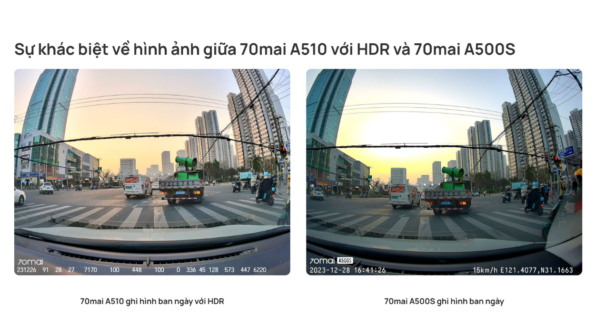
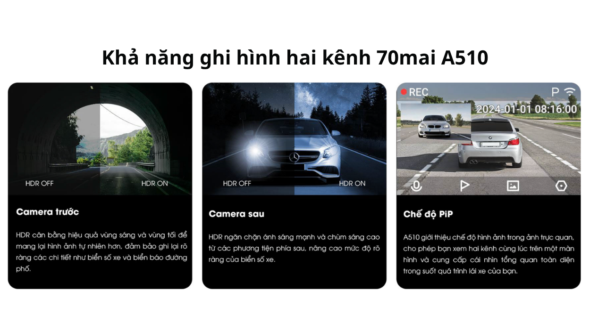
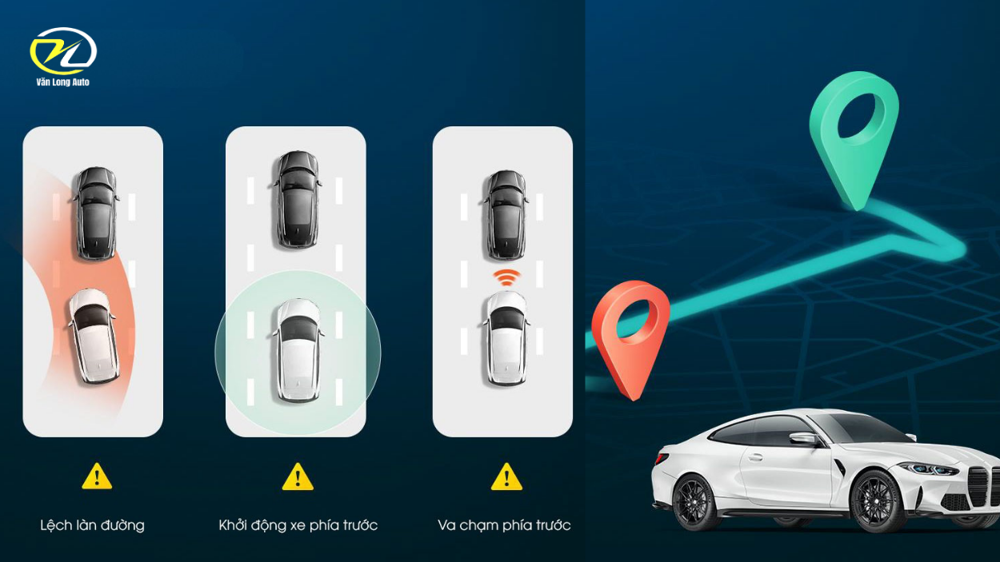
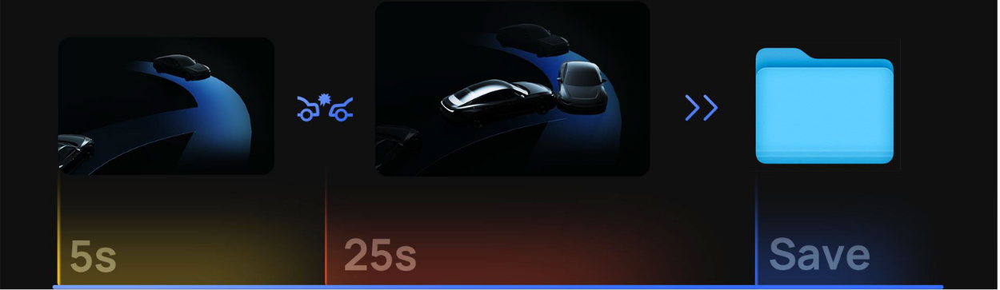
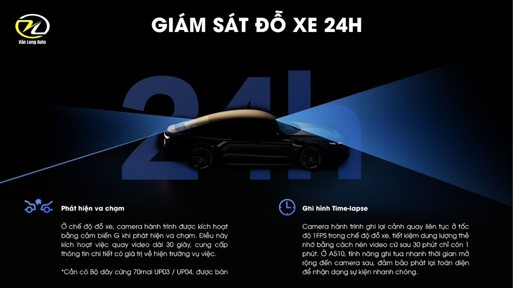
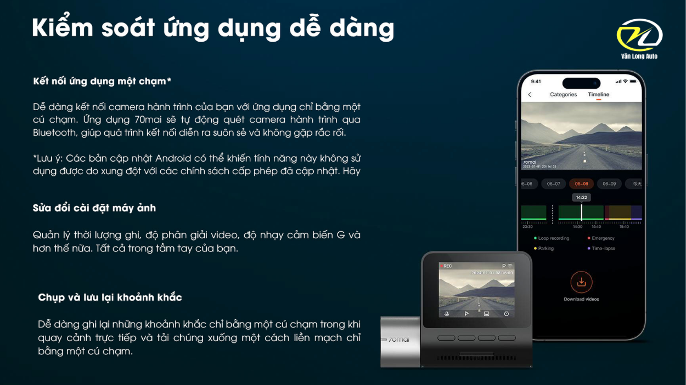

1944P HDR
Camera trước 5MP ghi lại chi tiết với dải sáng rộng.


Camera hành trình 1944P HDR với cảm biến Sony STARVIS 2, hỗ trợ ghi hình hai kênh, GPS, ADAS, giám sát đỗ xe và kết nối 4G tùy chọn.
Camera trước 5MP ghi lại chi tiết với dải sáng rộng.
Cảm biến Sony IMX675 cải thiện khả năng ghi hình thiếu sáng.
Lưu dữ liệu hành trình và hỗ trợ cảnh báo khi lái xe.
Hỗ trợ giám sát đỗ xe và kết nối từ xa khi có phụ kiện phù hợp.
Cảm biến 5MP Sony STARVIS 2 IMX675 kết hợp HDR giúp cân bằng vùng sáng và tối, đồng thời duy trì nhiều chi tiết hơn khi ghi hình ban ngày hoặc trong điều kiện ánh sáng yếu.

Chọn từng chế độ để trình bày chất lượng hình ảnh thực tế của A510 trong các điều kiện ánh sáng khác nhau.

A510 có thể kết hợp camera sau tương thích để bổ sung góc quan sát phía sau. Hình ảnh hai kênh có thể hiển thị đồng thời trên màn hình theo dạng hình trong hình.

ADAS hỗ trợ cảnh báo chệch làn, xe phía trước khởi hành và nguy cơ va chạm phía trước. GPS lưu tốc độ, thời gian và tọa độ để xem lại trên ứng dụng 70mai.

Khi phát hiện tác động, video sự kiện được lưu riêng để hạn chế bị ghi đè. Ghi vòng lặp tự thay thế các tệp thông thường cũ khi thẻ nhớ đầy.

Cảm biến G có thể kích hoạt đoạn ghi hình khi phát hiện va chạm. Chế độ Time-lapse hỗ trợ theo dõi trong thời gian dài khi camera được cấp nguồn phù hợp.
Cần Hardwire Kit UP03/UP04 tương thích, bán riêng.
< class="media">
Khi kết hợp bộ nguồn 4G UP04 và dịch vụ tương thích, người dùng có thể nhận cảnh báo, xem trực tiếp và tìm vị trí xe từ xa. Ứng dụng 70mai cũng hỗ trợ xem, tải video và thay đổi cài đặt.

Gửi tên xe và nhu cầu để Văn Long Auto tư vấn camera sau, thẻ nhớ và bộ nguồn phù hợp.
Tư vấn ngay